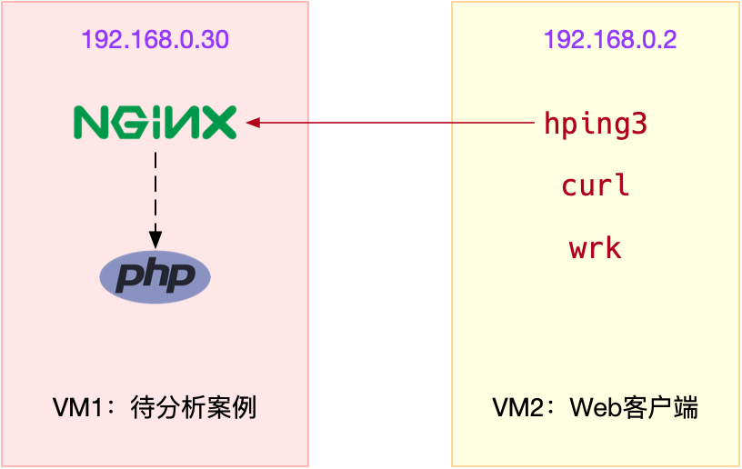

- 00 开篇词 别再让Linux性能问题成为你的绊脚石.md.html
- 01 如何学习Linux性能优化？.md.html
- 02 基础篇：到底应该怎么理解“平均负载”？.md.html
- 03 基础篇：经常说的 CPU 上下文切换是什么意思？（上）.md.html
- 04 基础篇：经常说的 CPU 上下文切换是什么意思？（下）.md.html
- 05 基础篇：某个应用的CPU使用率居然达到100%，我该怎么办？.md.html
- 06 案例篇：系统的 CPU 使用率很高，但为啥却找不到高 CPU 的应用？.md.html
- 07 案例篇：系统中出现大量不可中断进程和僵尸进程怎么办？（上）.md.html
- 08 案例篇：系统中出现大量不可中断进程和僵尸进程怎么办？（下）.md.html
- 09 基础篇：怎么理解Linux软中断？.md.html
- 10 案例篇：系统的软中断CPU使用率升高，我该怎么办？.md.html
- 11 套路篇：如何迅速分析出系统CPU的瓶颈在哪里？.md.html
- 12 套路篇：CPU 性能优化的几个思路.md.html
- 13 答疑（一）：无法模拟出 RES 中断的问题，怎么办？.md.html
- 14 答疑（二）：如何用perf工具分析Java程序？.md.html
- 15 基础篇：Linux内存是怎么工作的？.md.html
- 16 基础篇：怎么理解内存中的Buffer和Cache？.md.html
- 17 案例篇：如何利用系统缓存优化程序的运行效率？.md.html
- 18 案例篇：内存泄漏了，我该如何定位和处理？.md.html
- 19 案例篇：为什么系统的Swap变高了（上）.md.html
- 20 案例篇：为什么系统的Swap变高了？（下）.md.html
- 21 套路篇：如何“快准狠”找到系统内存的问题？.md.html
- 22 答疑（三）：文件系统与磁盘的区别是什么？.md.html
- 23 基础篇：Linux 文件系统是怎么工作的？.md.html
- 24 基础篇：Linux 磁盘I_O是怎么工作的（上）.md.html
- 25 基础篇：Linux 磁盘I_O是怎么工作的（下）.md.html
- 26 案例篇：如何找出狂打日志的“内鬼”？.md.html
- 27 案例篇：为什么我的磁盘I_O延迟很高？.md.html
- 28 案例篇：一个SQL查询要15秒，这是怎么回事？.md.html
- 29 案例篇：Redis响应严重延迟，如何解决？.md.html
- 30 套路篇：如何迅速分析出系统I_O的瓶颈在哪里？.md.html
- 31 套路篇：磁盘 I_O 性能优化的几个思路.md.html
- 32 答疑（四）：阻塞、非阻塞 I_O 与同步、异步 I_O 的区别和联系.md.html
- 33 关于 Linux 网络，你必须知道这些（上）.md.html
- 34 关于 Linux 网络，你必须知道这些（下）.md.html
- 35 基础篇：C10K 和 C1000K 回顾.md.html
- 36 套路篇：怎么评估系统的网络性能？.md.html
- 37 案例篇：DNS 解析时快时慢，我该怎么办？.md.html
- 38 案例篇：怎么使用 tcpdump 和 Wireshark 分析网络流量？.md.html
- 39 案例篇：怎么缓解 DDoS 攻击带来的性能下降问题？.md.html
- 40 案例篇：网络请求延迟变大了，我该怎么办？.md.html
- 41 案例篇：如何优化 NAT 性能？（上）.md.html
- 42 案例篇：如何优化 NAT 性能？（下）.md.html
- 43 套路篇：网络性能优化的几个思路（上）.md.html
- 44 套路篇：网络性能优化的几个思路（下）.md.html
- 45 答疑（五）：网络收发过程中，缓冲区位置在哪里？.md.html
- 46 案例篇：为什么应用容器化后，启动慢了很多？.md.html
- 47 案例篇：服务器总是时不时丢包，我该怎么办？（上）.md.html
- 48 案例篇：服务器总是时不时丢包，我该怎么办？（下）.md.html
- 49 案例篇：内核线程 CPU 利用率太高，我该怎么办？.md.html
- 50 案例篇：动态追踪怎么用？（上）.md.html
- 51 案例篇：动态追踪怎么用？（下）.md.html
- 52 案例篇：服务吞吐量下降很厉害，怎么分析？.md.html
- 53 套路篇：系统监控的综合思路.md.html
- 54 套路篇：应用监控的一般思路.md.html
- 55 套路篇：分析性能问题的一般步骤.md.html
- 56 套路篇：优化性能问题的一般方法.md.html
- 57 套路篇：Linux 性能工具速查.md.html
- 58 答疑（六）：容器冷启动如何性能分析？.md.html
- 加餐（一） 书单推荐：性能优化和Linux 系统原理.md.html
- 加餐（二） 书单推荐：网络原理和 Linux 内核实现.md.html
- 用户故事 “半路出家 ”，也要顺利拿下性能优化！.md.html
- 用户故事 运维和开发工程师们怎么说？.md.html
- 结束语 愿你攻克性能难关.md.html
- 捐赠
40 案例篇：网络请求延迟变大了，我该怎么办？
你好，我是倪朋飞。
上一节，我们学习了碰到分布式拒绝服务（DDoS）的缓解方法。简单回顾一下，DDoS 利用大量的伪造请求，导致目标服务要耗费大量资源，来处理这些无效请求，进而无法正常响应正常用户的请求。
由于 DDoS 的分布式、大流量、难追踪等特点，目前确实还没有方法，能够完全防御 DDoS 带来的问题，我们只能设法缓解 DDoS 带来的影响。
比如，你可以购买专业的流量清洗设备和网络防火墙，在网络入口处阻断恶意流量，只保留正常流量进入数据中心的服务器。
在 Linux 服务器中，你可以通过内核调优、DPDK、XDP 等多种方法，增大服务器的抗攻击能力，降低 DDoS 对正常服务的影响。而在应用程序中，你可以利用各级缓存、 WAF、CDN 等方式，缓解 DDoS 对应用程序的影响。
不过要注意，如果 DDoS 的流量，已经到了 Linux 服务器中，那么，即使应用层做了各种优化，网络服务的延迟一般还是会比正常情况大很多。
所以，在实际应用中，我们通常要让 Linux 服务器，配合专业的流量清洗以及网络防火墙设备，一起来缓解这一问题。
除了 DDoS 会带来网络延迟增大外，我想，你肯定见到过不少其他原因导致的网络延迟，比如
网络传输慢，导致延迟；
Linux 内核协议栈报文处理慢，导致延迟；
应用程序数据处理慢，导致延迟等等。
那么，当碰到这些原因的延迟时，我们该怎么办呢？又该如何定位网络延迟的根源呢？今天，我就通过一个案例，带你一起看看这些问题。
网络延迟
我相信，提到网络延迟时，你可能轻松想起它的含义——网络数据传输所用的时间。不过要注意，这个时间可能是单向的，指从源地址发送到目的地址的单程时间；也可能是双向的，即从源地址发送到目的地址，然后又从目的地址发回响应，这个往返全程所用的时间。
通常，我们更常用的是双向的往返通信延迟，比如 ping 测试的结果，就是往返延时 RTT（Round-Trip Time）。
除了网络延迟外，另一个常用的指标是应用程序延迟，它是指，从应用程序接收到请求，再到发回响应，全程所用的时间。通常，应用程序延迟也指的是往返延迟，是网络数据传输时间加上数据处理时间的和。
在 Linux 网络基础篇 中，我曾经介绍到，你可以用 ping 来测试网络延迟。ping 基于 ICMP 协议，它通过计算 ICMP 回显响应报文与 ICMP 回显请求报文的时间差，来获得往返延时。这个过程并不需要特殊认证，常被很多网络攻击利用，比如端口扫描工具 nmap、组包工具 hping3 等等。
所以，为了避免这些问题，很多网络服务会把 ICMP 禁止掉，这也就导致我们无法用 ping ，来测试网络服务的可用性和往返延时。这时，你可以用 traceroute 或 hping3 的 TCP 和 UDP 模式，来获取网络延迟。
比如，以 baidu.com 为例，你可以执行下面的 hping3 命令，测试你的机器到百度搜索服务器的网络延迟：
# -c表示发送3次请求，-S表示设置TCP SYN，-p表示端口号为80
$ hping3 -c 3 -S -p 80 baidu.com
HPING baidu.com (eth0 123.125.115.110): S set, 40 headers + 0 data bytes
len=46 ip=123.125.115.110 ttl=51 id=47908 sport=80 flags=SA seq=0 win=8192 rtt=20.9 ms
len=46 ip=123.125.115.110 ttl=51 id=6788 sport=80 flags=SA seq=1 win=8192 rtt=20.9 ms
len=46 ip=123.125.115.110 ttl=51 id=37699 sport=80 flags=SA seq=2 win=8192 rtt=20.9 ms
--- baidu.com hping statistic ---
3 packets transmitted, 3 packets received, 0% packet loss
round-trip min/avg/max = 20.9/20.9/20.9 ms
从 hping3 的结果中，你可以看到，往返延迟 RTT 为 20.9ms。
当然，我们用 traceroute ，也可以得到类似结果：
# --tcp表示使用TCP协议，-p表示端口号，-n表示不对结果中的IP地址执行反向域名解析
$ traceroute --tcp -p 80 -n baidu.com
traceroute to baidu.com (123.125.115.110), 30 hops max, 60 byte packets
1 * * *
2 * * *
3 * * *
4 * * *
5 * * *
6 * * *
7 * * *
8 * * *
9 * * *
10 * * *
11 * * *
12 * * *
13 * * *
14 123.125.115.110 20.684 ms * 20.798 ms
traceroute 会在路由的每一跳发送三个包，并在收到响应后，输出往返延时。如果无响应或者响应超时（默认5s），就会输出一个星号。
知道了基于 TCP 测试网络服务延迟的方法后，接下来，我们就通过一个案例，来学习网络延迟升高时的分析思路。
案例准备
下面的案例仍然基于 Ubuntu 18.04，同样适用于其他的 Linux 系统。我使用的案例环境是这样的：
机器配置：2 CPU，8GB 内存。
预先安装 docker、hping3、tcpdump、curl、wrk、Wireshark 等工具，比如 apt-get install docker.io hping3 tcpdump curl。
这里的工具你应该都比较熟悉了，其中 wrk 的安装和使用方法在 怎么评估系统的网络性能 中曾经介绍过。如果你还没有安装，请执行下面的命令来安装它：
$ https://github.com/wg/wrk
$ cd wrk
$ apt-get install build-essential -y
$ make
$ sudo cp wrk /usr/local/bin/
由于Wireshark 需要图形界面，如果你的虚拟机没有图形界面，就可以把 Wireshark 安装到其他的机器中（比如 Windows 笔记本）。
本次案例用到两台虚拟机，我画了一张图来表示它们的关系。

接下来，我们打开两个终端，分别 SSH 登录到两台机器上（以下步骤，假设终端编号与图示VM 编号一致），并安装上面提到的这些工具。注意， curl 和 wrk 只需要安装在客户端 VM（即 VM2）中。
同以前的案例一样，下面的所有命令都默认以 root 用户运行，如果你是用普通用户身份登陆系统，请运行 sudo su root 命令切换到 root 用户。
如果安装过程中有什么问题，同样鼓励你先自己搜索解决，解决不了的，可以在留言区向我提问。如果你以前已经安装过了，就可以忽略这一点了。
接下来，我们就进入到案例操作的环节。
案例分析
为了对比得出延迟增大的影响，首先，我们来运行一个最简单的 Nginx，也就是用官方的 Nginx 镜像启动一个容器。在终端一中，执行下面的命令，运行官方 Nginx，它会在 80 端口监听：
$ docker run --network=host --name=good -itd nginx
fb4ed7cb9177d10e270f8320a7fb64717eac3451114c9fab3c50e02be2e88ba2
继续在终端一中，执行下面的命令，运行案例应用，它会监听 8080 端口：
$ docker run --name nginx --network=host -itd feisky/nginx:latency
b99bd136dcfd907747d9c803fdc0255e578bad6d66f4e9c32b826d75b6812724
然后，在终端二中执行 curl 命令，验证两个容器已经正常启动。如果一切正常，你将看到如下的输出：
# 80端口正常
$ curl http://192.168.0.30
<!DOCTYPE html>
<html>
...
<p><em>Thank you for using nginx.</em></p>
</body>
</html>
# 8080端口正常
$ curl http://192.168.0.30:8080
...
<p><em>Thank you for using nginx.</em></p>
</body>
</html>
接着，我们再用上面提到的 hping3 ，来测试它们的延迟，看看有什么区别。还是在终端二，执行下面的命令，分别测试案例机器 80 端口和 8080 端口的延迟：
# 测试80端口延迟
$ hping3 -c 3 -S -p 80 192.168.0.30
HPING 192.168.0.30 (eth0 192.168.0.30): S set, 40 headers + 0 data bytes
len=44 ip=192.168.0.30 ttl=64 DF id=0 sport=80 flags=SA seq=0 win=29200 rtt=7.8 ms
len=44 ip=192.168.0.30 ttl=64 DF id=0 sport=80 flags=SA seq=1 win=29200 rtt=7.7 ms
len=44 ip=192.168.0.30 ttl=64 DF id=0 sport=80 flags=SA seq=2 win=29200 rtt=7.6 ms
--- 192.168.0.30 hping statistic ---
3 packets transmitted, 3 packets received, 0% packet loss
round-trip min/avg/max = 7.6/7.7/7.8 ms
# 测试8080端口延迟
$ hping3 -c 3 -S -p 8080 192.168.0.30
HPING 192.168.0.30 (eth0 192.168.0.30): S set, 40 headers + 0 data bytes
len=44 ip=192.168.0.30 ttl=64 DF id=0 sport=8080 flags=SA seq=0 win=29200 rtt=7.7 ms
len=44 ip=192.168.0.30 ttl=64 DF id=0 sport=8080 flags=SA seq=1 win=29200 rtt=7.6 ms
len=44 ip=192.168.0.30 ttl=64 DF id=0 sport=8080 flags=SA seq=2 win=29200 rtt=7.3 ms
--- 192.168.0.30 hping statistic ---
3 packets transmitted, 3 packets received, 0% packet loss
round-trip min/avg/max = 7.3/7.6/7.7 ms
从这个输出你可以看到，两个端口的延迟差不多，都是 7ms。不过，这只是单个请求的情况。换成并发请求的话，又会怎么样呢？接下来，我们就用 wrk 试试。
这次在终端二中，执行下面的新命令，分别测试案例机器并发 100 时， 80 端口和 8080 端口的性能：
# 测试80端口性能
$ # wrk --latency -c 100 -t 2 --timeout 2 http://192.168.0.30/
Running 10s test @ http://192.168.0.30/
2 threads and 100 connections
Thread Stats Avg Stdev Max +/- Stdev
Latency 9.19ms 12.32ms 319.61ms 97.80%
Req/Sec 6.20k 426.80 8.25k 85.50%
Latency Distribution
50% 7.78ms
75% 8.22ms
90% 9.14ms
99% 50.53ms
123558 requests in 10.01s, 100.15MB read
Requests/sec: 12340.91
Transfer/sec: 10.00MB
# 测试8080端口性能
$ wrk --latency -c 100 -t 2 --timeout 2 http://192.168.0.30:8080/
Running 10s test @ http://192.168.0.30:8080/
2 threads and 100 connections
Thread Stats Avg Stdev Max +/- Stdev
Latency 43.60ms 6.41ms 56.58ms 97.06%
Req/Sec 1.15k 120.29 1.92k 88.50%
Latency Distribution
50% 44.02ms
75% 44.33ms
90% 47.62ms
99% 48.88ms
22853 requests in 10.01s, 18.55MB read
Requests/sec: 2283.31
Transfer/sec: 1.85MB
从上面两个输出可以看到，官方Nginx（监听在80端口）的平均延迟是 9.19ms，而案例 Nginx 的平均延迟（监听在 8080 端口）则是 43.6ms。从延迟的分布上来看，官方 Nginx 90% 的请求，都可以在 9ms以内完成；而案例 Nginx 50% 的请求，就已经达到了 44 ms。
再结合上面 hping3 的输出，我们很容易发现，案例 Nginx 在并发请求下的延迟增大了很多，这是怎么回事呢？
分析方法我想你已经想到了，上节课学过的，使用 tcpdump 抓取收发的网络包，分析网络的收发过程有没有问题。
接下来，我们在终端一中，执行下面的 tcpdump 命令，抓取 8080 端口上收发的网络包，并保存到 nginx.pcap 文件：
$ tcpdump -nn tcp port 8080 -w nginx.pcap
然后切换到终端二中，重新执行 wrk 命令：
# 测试8080端口性能
$ wrk --latency -c 100 -t 2 --timeout 2 http://192.168.0.30:8080/
当 wrk 命令结束后，再次切换回终端一，并按下 Ctrl+C 结束 tcpdump 命令。然后，再把抓取到的 nginx.pcap ，复制到装有 Wireshark 的机器中（如果 VM1 已经带有图形界面，那么可以跳过复制步骤），并用 Wireshark 打开它。
由于网络包的数量比较多，我们可以先过滤一下。比如，在选择一个包后，你可以单击右键并选择 “Follow” -> “TCP Stream”，如下图所示：
然后，关闭弹出来的对话框，回到 Wireshark 主窗口。这时候，你会发现 Wireshark 已经自动帮你设置了一个过滤表达式 tcp.stream eq 24。如下图所示（图中省去了源和目的IP地址）：
从这里，你可以看到这个 TCP 连接从三次握手开始的每个请求和响应情况。当然，这可能还不够直观，你可以继续点击菜单栏里的 Statics -> Flow Graph，选中 “Limit to display filter” 并设置 Flow type 为 “TCP Flows”：
注意，这个图的左边是客户端，而右边是 Nginx 服务器。通过这个图就可以看出，前面三次握手，以及第一次 HTTP 请求和响应还是挺快的，但第二次 HTTP 请求就比较慢了，特别是客户端在收到服务器第一个分组后，40ms 后才发出了 ACK 响应（图中蓝色行）。
看到 40ms 这个值，你有没有想起什么东西呢？实际上，这是 TCP 延迟确认（Delayed ACK）的最小超时时间。
这里我解释一下延迟确认。这是针对 TCP ACK 的一种优化机制，也就是说，不用每次请求都发送一个 ACK，而是先等一会儿（比如 40ms），看看有没有“顺风车”。如果这段时间内，正好有其他包需要发送，那就捎带着 ACK 一起发送过去。当然，如果一直等不到其他包，那就超时后单独发送 ACK。
因为案例中 40ms 发生在客户端上，我们有理由怀疑，是客户端开启了延迟确认机制。而这儿的客户端，实际上就是前面运行的 wrk。
查询 TCP 文档（执行 man tcp），你就会发现，只有 TCP 套接字专门设置了 TCP_QUICKACK ，才会开启快速确认模式；否则，默认情况下，采用的就是延迟确认机制：
TCP_QUICKACK (since Linux 2.4.4)
Enable quickack mode if set or disable quickack mode if cleared. In quickack mode, acks are sent imme‐
diately, rather than delayed if needed in accordance to normal TCP operation. This flag is not perma‐
nent, it only enables a switch to or from quickack mode. Subsequent operation of the TCP protocol will
once again enter/leave quickack mode depending on internal protocol processing and factors such as
delayed ack timeouts occurring and data transfer. This option should not be used in code intended to be
portable.
为了验证我们的猜想，确认 wrk 的行为，我们可以用 strace ，来观察 wrk 为套接字设置了哪些 TCP 选项。
比如，你可以切换到终端二中，执行下面的命令：
$ strace -f wrk --latency -c 100 -t 2 --timeout 2 http://192.168.0.30:8080/
...
setsockopt(52, SOL_TCP, TCP_NODELAY, [1], 4) = 0
...
这样，你可以看到，wrk 只设置了 TCP_NODELAY 选项，而没有设置 TCP_QUICKACK。这说明 wrk 采用的正是延迟确认，也就解释了上面这个40ms 的问题。
不过，别忘了，这只是客户端的行为，按理来说，Nginx 服务器不应该受到这个行为的影响。那是不是我们分析网络包时，漏掉了什么线索呢？让我们回到 Wireshark 重新观察一下。
仔细观察 Wireshark 的界面，其中， 1173 号包，就是刚才说到的延迟 ACK 包；下一行的 1175 ，则是 Nginx 发送的第二个分组包，它跟 697 号包组合起来，构成一个完整的 HTTP 响应（ACK 号都是 85）。
第二个分组没跟前一个分组（697 号）一起发送，而是等到客户端对第一个分组的 ACK 后（1173 号）才发送，这看起来跟延迟确认有点像，只不过，这儿不再是 ACK，而是发送数据。
看到这里，我估计你想起了一个东西—— Nagle 算法（纳格算法）。进一步分析案例前，我先简单介绍一下这个算法。
Nagle 算法，是 TCP 协议中用于减少小包发送数量的一种优化算法，目的是为了提高实际带宽的利用率。
举个例子，当有效负载只有 1 字节时，再加上 TCP 头部和 IP 头部分别占用的 20 字节，整个网络包就是 41 字节，这样实际带宽的利用率只有 2.4%（1/41）。往大了说，如果整个网络带宽都被这种小包占满，那整个网络的有效利用率就太低了。
Nagle 算法正是为了解决这个问题。它通过合并 TCP 小包，提高网络带宽的利用率。Nagle 算法规定，一个 TCP 连接上，最多只能有一个未被确认的未完成分组；在收到这个分组的 ACK 前，不发送其他分组。这些小分组会被组合起来，并在收到 ACK 后，用同一个分组发送出去。
显然，Nagle 算法本身的想法还是挺好的，但是知道 Linux 默认的延迟确认机制后，你应该就不这么想了。因为它们一起使用时，网络延迟会明显。如下图所示：
当 Sever 发送了第一个分组后，由于 Client 开启了延迟确认，就需要等待 40ms 后才会回复 ACK。
同时，由于 Server 端开启了 Nagle，而这时还没收到第一个分组的 ACK，Server 也会在这里一直等着。
直到 40ms 超时后，Client 才会回复ACK，然后，Server 才会继续发送第二个分组。
既然可能是 Nagle 的问题，那该怎么知道，案例 Nginx 有没有开启 Nagle 呢？
查询 tcp 的文档，你就会知道，只有设置了 TCP_NODELAY 后，Nagle 算法才会禁用。所以，我们只需要查看 Nginx 的 tcp_nodelay 选项就可以了。
TCP_NODELAY
If set, disable the Nagle algorithm. This means that segments are always sent as soon as possible, even
if there is only a small amount of data. When not set, data is buffered until there is a sufficient
amount to send out, thereby avoiding the frequent sending of small packets, which results in poor uti‐
lization of the network. This option is overridden by TCP_CORK; however, setting this option forces an
explicit flush of pending output, even if TCP_CORK is currently set.
我们回到终端一中，执行下面的命令，查看案例 Nginx 的配置:
$ docker exec nginx cat /etc/nginx/nginx.conf | grep tcp_nodelay
tcp_nodelay off;
果然，你可以看到，案例 Nginx 的 tcp_nodelay 是关闭的，将其设置为 on ，应该就可以解决了。
改完后，问题是否就解决了呢？自然需要验证我们一下。修改后的应用，我已经打包到了Docker 镜像中，在终端一中执行下面的命令，你就可以启动它：
# 删除案例应用
$ docker rm -f nginx
# 启动优化后的应用
$ docker run --name nginx --network=host -itd feisky/nginx:nodelay
接着，切换到终端二，重新执行 wrk 测试延迟：
$ wrk --latency -c 100 -t 2 --timeout 2 http://192.168.0.30:8080/
Running 10s test @ http://192.168.0.30:8080/
2 threads and 100 connections
Thread Stats Avg Stdev Max +/- Stdev
Latency 9.58ms 14.98ms 350.08ms 97.91%
Req/Sec 6.22k 282.13 6.93k 68.50%
Latency Distribution
50% 7.78ms
75% 8.20ms
90% 9.02ms
99% 73.14ms
123990 requests in 10.01s, 100.50MB read
Requests/sec: 12384.04
Transfer/sec: 10.04MB
果然，现在延迟已经缩短成了 9ms，跟我们测试的官方 Nginx 镜像是一样的（Nginx 默认就是开启 tcp_nodelay 的） 。
作为对比，我们用 tcpdump ，抓取优化后的网络包（这儿实际上抓取的是官方 Nginx 监听的 80 端口）。你可以得到下面的结果：
从图中你可以发现，由于 Nginx 不用再等 ACK，536 和 540 两个分组是连续发送的；而客户端呢，虽然仍开启了延迟确认，但这时收到了两个需要回复 ACK 的包，所以也不用等 40ms，可以直接合并回复 ACK。
案例最后，不要忘记停止这两个容器应用。在终端一中，执行下面的命令，就可以删除案例应用：
$ docker rm -f nginx good
小结
今天，我们学习了网络延迟增大后的分析方法。网络延迟，是最核心的网络性能指标。由于网络传输、网络包处理等各种因素的影响，网络延迟不可避免。但过大的网络延迟，会直接影响用户的体验。
所以，在发现网络延迟增大后，你可以用 traceroute、hping3、tcpdump、Wireshark、strace 等多种工具，来定位网络中的潜在问题。比如，
使用 hping3 以及 wrk 等工具，确认单次请求和并发请求情况的网络延迟是否正常。
使用 traceroute，确认路由是否正确，并查看路由中每一跳网关的延迟。
使用 tcpdump 和 Wireshark，确认网络包的收发是否正常。
使用 strace 等，观察应用程序对网络套接字的调用情况是否正常。
这样，你就可以依次从路由、网络包的收发、再到应用程序等，逐层排查，直到定位问题根源。
思考
最后，我想邀请你一起来聊聊，你所理解的网络延迟，以及在发现网络延迟增大时，你又是怎么分析的呢？你可以结合今天的内容，和你自己的操作记录，来总结思路。
欢迎在留言区和我讨论，也欢迎把这篇文章分享给你的同事、朋友。我们一起在实战中演练，在交流中进步。
© 2019 - 2023 Liangliang Lee. Powered by gin and hexo-theme-book.